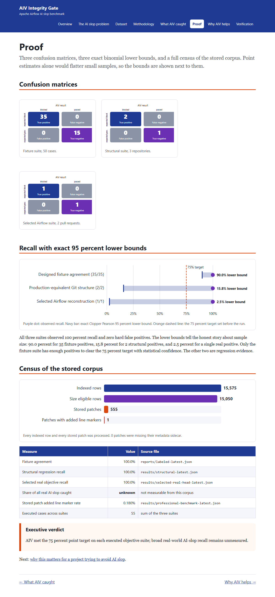

Proof
Three confusion matrices, three exact binomial lower bounds, and a full census of the stored corpus. Point estimates alone would flatter small samples, so the bounds are shown next to them.
Confusion matrices
Recall with exact 95 percent lower bounds
All three suites observed 100 percent recall and zero hard false positives. The lower bounds tell the honest story about sample size: 90.0 percent for 35 fixture positives, 15.8 percent for 2 structural positives, and 2.5 percent for a single real positive. Only the fixture suite has enough positives to clear the 75 percent target with statistical confidence. The other two are regression evidence.
Census of the stored corpus
| Measure | Value | Source file |
|---|---|---|
| Fixture agreement | 100.0% | reports/labeled-latest.json |
| Structural regression recall | 100.0% | results/structural-latest.json |
| Selected real objective recall | 100.0% | results/selected-real-head-latest.json |
| Share of all real AI slop caught | unknown | not measurable from this corpus |
| Stored patch added line marker rate | 0.180% | results/professional-benchmark-latest.json |
| Executed cases across suites | 55 | sum of the three suites |
Executive verdict
AIV met the 75 percent point target on each executed objective suite; broad real-world AI-slop recall remains unmeasured.
Next: why this matters for a project trying to avoid AI slop.